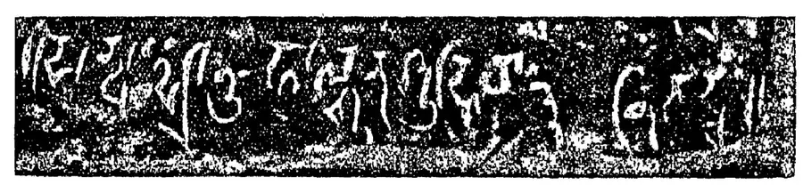

Daulatpurā plate of Bhējadēva I. of Mahōdaya ; [Harsha-]Samvat 100
No. 24.— DAULATPURA PLATE OF BHOJADEVA I. OF MAHODAYA;
[HARSHA-]SAMVAT 100.
BY F. KIELHORN, PH. D., LL.D., C.I.E.; GÖTTINGEN.
This plate is said to have been found, some thirty years ago, among the ruins of an ancient temple near the village of Sivā, the 'Sewa' of the map, about 7 miles E.N.E. of the town of Didwāna in Jōdhpur (Mārwād), Rājputāna, Indian Atlas, quarter-sheet No. 33 N.E., long. 74° 44' E., lat. 27° 27' N. It was taken at the time to the small fortress of Daulatpurā, about 4 miles E.S.E. of Didwāna, but since September 1897 has been deposited in the Historical Records Office at Jōdhpur. I edit the inscription which it contains from impressions, which were kindly furnished to Dr. Hultzsch by Munsiff Debiprasad of Jōdhpur and by Dr. Führer.
This is a single plate, inscribed on one side only. It is very similar to the Dighwā-Dubauli plate of Mahēndrapāla and the Bengal As. Soc.'s plate of Vināyakapāla, published by Dr. Fleet, with photolithographs, in Ind. Ant. Vol. XV. p. 105 ff. and p. 138 ff. The plate is about 1' 9½" broad by 1' 4½" high, and on to its proper right side is soldered a heavy brass seal, about 6½" broad by 9¾" high, the top of which is raised into an arched peak. The letters of the legend on the seal are in relief, and the arch contains a standing figure which is only faintly visible in the impressions. The writing on both the plate and the seal is well executed, and in an excellent state of preservation. The size of the letters on the plate is between ¾" and ¾", and on the seal, between ¾" and ½". The characters belong to the northern class of alphabets, and are similar to, but in some particulars3 more antique than, those of the two plates mentioned above. They include, in line 16 of the plate, numerical symbols for 100 and 10, and the numeral figure for 3.4 The language of the inscription is Sanskrit, and, with the exception of one verse in lines 15 and 16, the text is in prose. In respect of orthography, I may note the use of the sign for v, to denote b; the constant doubling of t before r; the employment of n instead of anusvāra in the word anbu, in lines 10 and 14 of the plate; the use of parambhagavatībhaktō in lines 4 and 65 of the plate, and of parambhagavatībhaktō in lines 5 and 10 of the seal, for paramabhagavatībhaktō; and the occurrence of the term samvatsrō,6 for samvatsarah or the ordinary samvat, in the date, in line 16.
The inscription is one of a Mahārāja Bhōjadēva, who, from his residence or camp of Mahōdaya, on the representation of one of the people concerned, renews here a grant which had been made by his great-grandfather, the Mahārāja Vatsarājadēva, and continued by his grandfather, the Mahārāja Nāgabhaṭadēva, but, in his own reign, had fallen into abeyance. The object of the grant is the village of Sivā, in the Dēṇdvānaka-vishaya of the Gurjaratrā-
1 Viz. his sovereign, the Chōja king Rājādhirāja.
2 I.e. Vārānasi (Benares).
3 I refer especially to the different forms of the consonants f and t; of the subscript u in the aksharas pu, yu and shu; and of the medial ē (ai, ö, and au).
4 For other northern inscriptions which exhibit both numerical symbols and numeral figures, see my List of Northern Inscriptions, No. 528 (which is about 78 years older than the present inscription), 541, 560, 602, 616, 651, and 635.
5 In line 6 the engraver has actually engraved paranbhāga.
6 See my List, Nos. 542 (where the actual reading also appears to be samratsrō), 544, and 545.
bhūmi. The dútaka of this 'charter, issued by Prabhāsa,' was the Yuvarāja Nāgabhaṭa; and the date is the 13th of the bright half of Phálguna of the year 100.
Date of the Daulatpura Plate.

SCALE '67
The genealogy of Bhôjadēva, which is given on both the plate and the seal, was known already from the Dighwā-Dubaulī and Bengal As. Soc.'s plates mentioned above. The Dighwā-Dubaulī plate, which is dated 55 years later, records a grant of his son Mahēndrapāla; and from the Bengal As. Soc.'s plate we know that Mahēndrapāla's son and successor was another Bhôjadēva (or Bhôjadēva II.), who in turn was succeeded by Vināyakapāla, his brother from a different mother. All the three grants were issued from the skandhāwūra (i.e. either a camp or royal residence1) at Mahôdaya. As was first pointed out by Dr. F. E. Hall, Mahôdaya or Mahôdayâ, according to the lexicographers,2 is another name of Kanyakubjâ (Kânyakubja, or Kanauj), and there is no reason now why that identification should not be accepted here. So long as only the two other grants were available, which refer to localities about 250 miles south-east and 150 miles east by north of Kanauj, it could well be doubted3 whether the government of these Mahûrājas had extended so far west as to include Kanauj; but we now see from the present inscription that these princes held sway even over a part of the country which is more than 300 miles west of Kanauj, and for the three grants together it would be difficult to find a place of issue more favourably situated than that well-known city.
Our inscription indicates the solution of another difficulty presented by the other grants. The plate of Mahēndrapāla, in line 14, contains the half-verse Śrīmad-Bhāka-prayuktasya śāsanasya sthir-āyatēh, and Vināyakapāla's plate, in line 16, has the similar half-verse Śrī-Harshēna prayuktasya śāsanasya sthir-āyatēh. To make some sense of these incomplete sentences Dr. Fleet had to supply the words 'this is the writing of;' but now a different explanation is furnished to us. Instead of the half-verse we here, in lines 15 and 16, have the full verse Prabhāsēna prayuktasya śāsanasya sthir-āyatēh brīmān-Nāgabhaṭô nūmnā yuvarājô=tra dútakah. This verse makes it clear, that the half-verse of the other grants also is part of a customary verse, the object of which was to record, in the second half, the name of the dútaka; and that, through the force of habit (and perhaps for a reason which will appear below), the half-verse was inserted even when no dútaka was to be mentioned. The exact interpretation of the details of the verse solely depends on the sense of the word prayuktasya. In my opinion, the meaning which at once suggests itself for śāsanam̄ prayuj, is, 'to employ a command for a certain purpose, to address an order to somebody, to proclaim an ediot, to issue a charter,' and Prabhāsēna prayuktam̄ śāsanam̄, therefore, could hardly be anything else than Prabhāsasya śāsanam̄, 'an order or charter of Prabhāsa,' which, in the case of the present inscription, of course would mean 'of Bhôjadēva.' In accerdance with this interpretation I take the three names, Prabhāsa, Bhāka and Harsha, to be second names of the three Mahûrājas who issued the respective grants; and I suspect that in the grants of
1 See e.g. Halāyudha's Abhidhānaratnamāld, II. 181: skandhdodra iti prājñai rājadhānt nīgadyatī.
2 See ibid. II. 132: Kanyakubjâ Mahôdayâ.
3 See Ind. Ant. Vol. XV. p. 111.
Mahèndrapála and Vinâyakapála the by themselves meaningless half-verses, to some extent, were inserted for the very purpose of recording those second names of the donor. With the full verse of the present inscription I would compare the concluding verse of the Achyutapuram and Parlâ-Kimeđi plates of the Gânga Mahârája Indravarman,1 in which also the second name of that prince, Râjasimha, is mentioned, as it were incidentally, only in connection with the writing of the grants.
The localities mentioned in this inscription admit of easy identification. The village of Sivâ of course is the very place near which the plate was found, and the name of the Dènđvânaka-vishaya survives in that of the town of Didwâna which is about 7 miles W. S. W. of Sivâ. The Dènđvânaka-vishaya is stated to have been in the Gurjaratrâ-bhûmi. I have not been able to trace the name Gurjaratrâ in any of the published records;2 but I find the term Gurjaratrâ-manđala, denoting the same part of the country (and no doubt synonymous with Gurjaratrâ-bhûmi), in an unpublished inscription of about the 8th century at Kâlañjar.3 That inscription speaks of a man who had gone forth from Mangalânaka, situated in the Gurjaratrâ-manđala, and Mangalânaka4 clearly is the 'Maglona' of the map, which is only about 28 miles N. N. E. of Didwâna.
The date of the inscription, like the dates of the two cognate grants, must be referred to the Harsha era. It does not admit of verification, but, judging by the date of Mahèndrapála's plate, it would probably correspond to the 2nd March A.D. 706.
The Mahârája Bhôjadêva I. of our inscription was preceded by his father, the Mahârája Râmabhadradêva, and succeeded by his son, the Mahârája Mahèndrapáladêva. The same names we find again, in the same order, in the list of the later Mahârájâdhirâjas of Kanauj. According to the Pehevâ (Pehoa) inscription of [Harsha-]Samvat 276, No. 546 of my List, the Mahârájâdhirâja Bhôjadêva was the successor of the Mahârájâdhirâja Râmabhadradêva; and according to the Siyadônî inscription, ibid. Nos. 18 and 20, Bhôjadêva was succeeded by the Mahârájâdhirâja Mahèndrapáladêva. This alone would go far to prove that the later Mahârájâdhirâjas were descendants of the earlier Mahârájas. But in addition to this, like the Mahârájas the Mahârájâdhirâjas also, in the Siyadônî inscription,5 apparently are referred to as ruling at Mahôdayâ as their capital; and so far as we can judge from the known inscriptions, the extent and situation of their respective dominions, at least from the west to the east, were about the same. On the west, we have seen above, the plate of the Mahârája Bhôjadêva I. takes us to Didwâna in6 Mârwâđ; and on the east, the plate of his grandson, the Mahârája Vinâyakapála, records the grant of a village near Benares. The direct distance from Didwâna to Benares is about 540 miles; and from between the two places, and not far from a straight
1 See above, Vol. III. p. 129, and Ind. Ant. Vol. XVI. p. 184: Idaîn Vinayachandrêpa Bhâmuchandrasya sûnund kêsanaîn Râjasiâhasya likbitach sva-mukâ-âjñayâ.
2 I find Gurjartrâ[h] in Ep. Ind. Vol. II. p. 445, l. 13, corresponding, according to Prof. Bühler, to the modern Gujarât, and, according to him, coined out of the latter; see ibid. p. 438.
3 The inscription is above a statue of Siva and Pârvatî in a cell near Nîlakapṭha's temple. A photolithograph of it is given in Archæol. Surv. of India, Vol. XXI. Plate ix. K. The following is a full transcript of the text, from Sir A. Cunningham's impressions:—
[1] [Jayati*] bluvana-kârapaîn Svayambhur-jjayatî Purandara-narindanô Murârir-jjayatî Girisntâ-niruddha-dêhô
[2] [du]rita-bhay-âpaharô Haraś-cha dêvah ॥ Śrīmad-Gurjjarattrâmanđal-ântahpâti-Maringalânaka-vinirggata.
[3] Nêmakânvaya-Jènđ[u]ka-suta-Dêddukêna Bhagavatyâh kârita-manđapikâ-prasa[in]gêna tad-bhâryaya Lakshmyâ pra-
[4] tishṭhâpitô-yam-Umâmahâévara-pattah ॥
4 In an inscription of [Vikrama-]Samvat 1272, which comes from Maglona itself, and of which I owe impressions to Dr. Wührer, the name of the place is spelt Maringalânaka.
5 See Ep. Ind. Vol. I. p. 178, l. 40 of the text, where Mahôdayâ is compared with Indra's town Amarâvati.
line connecting them, we have, from west to east, the Rájórgađh (in Alwar) inscription of the reign of the Mahárájádhirája Vijayapáladěva, No. 39 of my List, the Gwálior inscriptions of the reign of the Mahárájádhirája Bhôjaděva, ibid. Nos. 15 and 16, the Asni inscription of the reign of the Mahárájádhirája Mahípáladěva, ibid. No. 25, and1 the Jhúst plate of the M. J. V. J. Nír. ja Trilôchanapáladěva, ibid. No. 60. Since of the reign of the Mahárájádhirája Bhôjaděva we besides have an inscription at Pehevâ (Pehoa) in the north, ibid. No. 540, and another at Dêôgađh in the south, ibid. No. 14, the kingdom, in his time, in either direction may have far more extensive than under the Mahárájas; but that they also ruled over part of the northern country, is shewn by the Dighwâ-Dubaulî plate of Mahéndrapúla which, like the Madhuban plate of Harsha, records a grant in the Šrávastí-bhukti, and future discovery may shew that their rule extended farther to the north and south than we know at present.
Regarding the connection of the Mahárájas of Mahôdaya with any of the earlier rulers of Kanauj, and particularly concerning their relation to the great king Harsha, I am unable to give any information. I can only draw attention to the fact that the manner in which their genealogy is given in their plates, and especially the way in which each of them is described as the devotee of a particular deity, remind one of, and apparently are adopted from2 the corresponding portions of Harsha's own grants.
TEXT.3
The Plate.
- 1 Öm4 svasti [[*]] Šrí-Mahôdaya-samâvásit-ânêka-nâu-hasty-asva-ratha-pattí-samajan-skandhâvárât=paramavaishpa-
- 2 vô mahárája-šrí-Dêvašaktidêvas=tasya puttras=tatpâdânudhyâtah -il- Bhûyikâdêvyâm=utpannah parama-
- 3 mâhêšvarô mahárája-šrí-Vatsarájadêvas=tasya puttras=tatpâdânudhyâtah šrí- Sundaridêvyâm=utpannah
- 4 6parambhagavatí-haktô mahárája-šrí-Nâgabhaṭadêvas=tasya puttras=tatpâdânudhyâtah šrímad-Ísaṭâdê-
- 5 vyâm=utpannah paramâdityabhaktô mahárája-šrí-Râmabhadradêvas=tasya puttras=tatpâdânudhyâtah šrí-
- 6 mad-Appâdêvyâm=utpannah 5paranbhâgavatíbhaktô mahárája-šrí-Bhôjadêvah6 || Gurjjarattrâ-bhûmau |7 Dênđvâna-
- 7 ka-vishaya-samva(mba)ddha-8Sivâgrâm-[[â*]]grahârê samupagatân=sarvvân-êva yathâsthâna-niyuktân=prativâsinas=cha
- 8 samâjñâpayati | Bhaṭta-Harshukêna(na) vijñâpitam | Uparilikhit-âgrahâras=sarvvâya-samêta â-chandr-ârkka-
1 Perhaps also the Karrâ inscription of the Mahárájádhirája Yaśahpála, who probably was a king of Kanauj, No. 62 of my List.
2 The same may be said of the genealogy in the Dêô-Baranârk inscription of the Mahárájádhirája Jivitaguptadêva II. of the family of the Guptas of Magadha, Gupta Inscr. p. 215.
3 From impressions supplied by Munsiff Debiprasad and Dr. Führer.
4 Expressed by a symbol. 5 Read paramabhaga.
6 Read 6dêvo, and omit the following sign of punctuation.
7 This sign of punctuation is superfluous.
8 This clearly is the reading of the plate, but the forms of the consonants of the four akeharas Sivâgrâma appear to be more modern than the forms of the same letters, elsewhere employed in this inscription. The difference is particularly striking in the case of the s and m; but the gr of grâ also does not agree with the gr of the following grahârê, and the v of vâ differs somewhat from the v in e.g. the word bhagavatt of the preceding line. At the same time, I see nothing in the impression which could lead me to think that another name had been previously engraved.
9 kshiti-kálam púrvvadatta-děvavra(bra)hmadéya-varjijtah paramaděvapádánám prapitámaha-mahárája-śrí-Vatsa-
10 rájaděvēna mat-pitámaha-bhaṭta-Vāsuděvâya sásanēna dattō bhuktas=cha tēna
ch=āsya shashth-ānsō1 bhaṭta-Vishṇavē pra-
11 tigraha-pattrēna dattah pitámaha-mahárája-śrí-Nāgabhaṭadēvēn=ānumatir=ddattā
děva-rájyē tu tach=chhásanam=anuma-
12 tiś=chā vigatim=upagaté2 [*] Tad=itthañ vijñâpitam sásanam=anumatiñ
pratigraha-pattrañ bhōgap(ñ)=cha jñâtvâ mayâ pittrōh puny-ābhivṛi-
13 ddhayē Kâśyapasagōttr-Āśvalâyanava(ba)hvṛichasavra(bra)hmachâri-bhaṭtaVāsuděv-
ānvayaja-vrâ(brâ)hmapânâm Kâtyâyanasagōttr-Āśva-
14 lâyanava(ba)hvṛichasavra(bra)hmachâri-bhaṭtaVishṇvanvayajavrâ(brâ)h m a n â n â ñ = c h a
prâgbhōga-kramēp=niva ³yathânsam=anumôdita iti vidityâ
15 bhavadbhis=samanumantavyaḥ prativâsibhir=apy=ájñâśravapa-vidhêyair=vbhú(bbhú)tvâ
sarvv-âyâ êshâm * samupanêyâ iti || Prabhâsēna4 prayukta-
16 sya sásanasya sthir-âyatéḥ | śrímân=Nāgabhaṭō nâmnâ yuvarâjō=ttra dûtakaḥ ||
Samvatsró5 100 Phâlguna-śudi 10 36 niva(ba)ddhañ ||
The Seal.
| 1 | Paramavaishṇavō | mahárája-śrí-Dēvaśakti- |
| 2 | dēvas=tasya | puttras=tatpâdânudhyâtaḥ śrí-Bhúyik[â]- |
| 3 | dēvyâm=utpannaḥ | paramamâhêsvarō mahárája- |
| 4 | śrí-Vatsarájadēvi *tasya | puttras=tatpâdânudhyâta[h] |
| 5 | śrí-Sundaridēvyâm=utpannaḥ | ⁷parañbhagavatíbhaktó |
| 6 | mahárája-śrí-Nāgabhaṭadēvas=tasya | puttras=ta- |
| 7 | tpâdânudhyâtaḥ śrímad-Āsatâdēvyâm=utpannaḥ | para- |
| 8 | mâdityabhaktó | mahárája-śrí-Rámabhadradēvas=ta- |
| 9 | sya puttras=tatpâdânudhyâtaḥ śrímad-Appâdēvyâm=utpanna[h] | |
| 10 | ⁷parañbhagavatíbhaktó | mahárâ[ja]-śrí-Bhôjadēva[h] [*] |
TRANSLATION.
(Line 1.) Óm. Hail !
From the royal residence,8 furnished with many boats, elephants, horses, chariots and foot-soldiers, which is fixed at the glorious Mahôdaya:—9
(There was) the devout worshipper of Vishṇu, the Mahárája Dēvaśaktidēva.10 Begotten on Bhúyikâdēvi, his son, who meditated on his feet, (was) the devout worshipper of Mahêsvara (Śiva), the Mahárája Vatsarájadēva. Begotten on Sundaridēvi, his son, who meditated on his feet, (was) the devout worshipper of Bhagavati,11 the Mahárája Nāgabhaṭadēva. Begotten on Āsatâdēvi, his son, who meditated on his feet, (was) the devout worshipper of the Sun, the Mahárája Rámabhadradēva. Begotten on Appâdēvi, his son, who meditates on his feet, the devout worshipper of Bhagavati, the Mahárája Bhôjadēva, issues these commands to all appointed to the several offices and to the inhabitants, assembled at the agrahára
1 Read -dâhâ.
2 Here one would have expected iti.
Read yathâdânsam.
4 Metre : Ślôka (Anushtubh).
5 Read sañvatsaraḥ.
6 The numbers 100 and 10 are denoted by numerical symbols, and 3 by a numeral figure.
7 Read paramabhage.
8 Or 'from the camp . . . which is pitched at.'
9 The sentence is continued below, in the words 'the Mahárája Bhôjadēva.'
10 In the original the names of the Mahárájas and their wives have the word śrí or irīmat, 'the illustrious,' prefixed to them.
11 I.e. either the goddess Durgâ or Lakshmi.
village of Sivâ, which belongs to the Dêqđvânaka vishaya in the Gurjaratrâ country (bhûmî):—
(L. 8.) The Bhatṭa Harshuka has apprised (us) that the above-written agrahâra, with every income from it excepting previous gifts to gods and Brâhmans, by means of a charter was granted by our great-grandfather, the Mahârâja Vatsarâjadêva, for as long as the moon, the sun and the earth endure, to his grandfather, the Bhatṭa Vâsudêva, and was possessed (by the latter), and that by him (the Bhatṭa Vâsudêva) the sixth part of it was given by a deed of donation to the Bhatṭa Vishnu; that our grandfather, the Mahârâja Nâgabhatadêva, signified his consent; but that, in our own reign, that charter and consent have fallen into abeyance.
(L. 12.) Having heard, then, of that charter thus brought to our notice, of the consent, the deed of donation and the (fact of) possession, we, for the increase of the religious merit of our parents, have given permission that (the agrahâra), shared in exact accordance with previous possession, shall belong to the Brâhmans born in the lineage of the Bhatṭa Vâsudêva, who are of the Kâsyapa gôtra and are students of the Âśvalâyana (sâkhâ) of the Rîgvêda, and to the Brâhmans born in the lineage of the Bhatṭa Vishnu, who are of the Kâtyâyana gôtra and are students of the Âśvalâyana (sâkhâ) of the Rîgvêda. Knowing this, you should assent to it, and the inhabitants, being ready to obey our commands, should make over to these people all income (due to them).
(L. 15.) Of the firmly enduring charter, issued by Prabhâsa, the dûtaka is here the Yuvarâja, the illustrious Nâgabhaṭa.
Recorded on the 13th of the bright half of Phâlguna of the year 100.1
1 The text of the seal is identical with part of the text of the plate.
SCALE '67
(printed on p. 209)